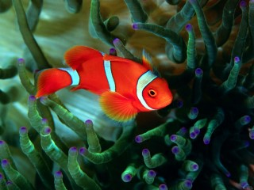
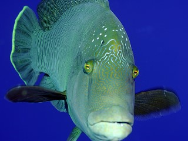

Рыбы-клоуны, или амфиприоны (лат. Amphiprion) — род морских рыб из семейства помацентровые. Чаще всего под этим названием фигурирует аквариумная рыбка оранжевый амфиприон (Amphiprion percula).
Cheilinus undulatus (лат.) — вид морских костистых рыб из семейства губановых (Labridae). Населяют коралловые рифы Красного моря, тропических районов Индийского и Тихого океанов: от Южной и Восточной Африки до архипелага Туамоту, на север — до островов Рюкю. Приурочены к глубинам 1—100 м.
